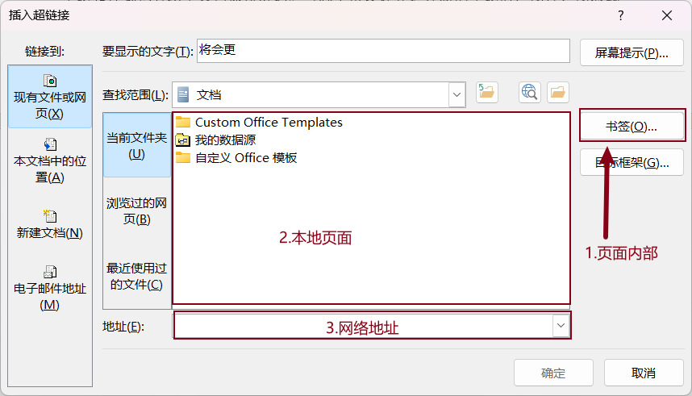
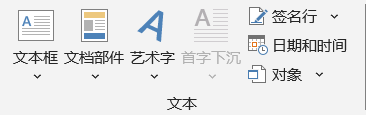

插入
Insert
- 内容 Contents
- 表格
- 超链接
- 页眉、页脚、页码
- 文档部件
- 方法 Methods
- 示范 + 实操
- 提示 Tips
- 动态选项卡的使用
页面
- 封面
- 华而不实
- 空白页
- 任意位置插入新页，相当于增加了2个分页符
- 分页
- 在当前位置结束，开始新一页；CTRL + Enter
表格
- 系统内置了很多样式，可以直接使用
- 也可以根据需要单独设置表格样式：适合数量少、临时使用
- 还可以先创建样式再使用：适合数量多、统一使用[]
- 插入表格
- 按照行数、列数插入表格
- 文本转换成表格
- 特定格式的文本可以转换为表格，通常使用制表位；使用Tab键控制
-
文本转换成表格 - 表格转文本
- "表格工具"→"布局"→"数据"→"转换为文本"
- 使用公式
- "表格工具"→"布局"→"数据"→"公式"
- 将光标定位在表格某处，点击"数据"区域的"公式fx"菜单，系统会自动判断如何运算，如向上求和SUM(ABOVE)、向左求和SUM(LEFT)
- Word中的表格，使用关键字ABOVE、LEFT、RIGHT等表示数据的范围
- 计算功能有限，请尽量使用Excel完成
-
支持的公式 MIN() 最小值 MAX() 最大值 SUM() 求和 AVERAGE() 求平均 - 三线表格 - 手动设置
-
sn name age 1 gl 20 2 cq 22 3 sz 23 4 sh 30 5 nj 32 6 gz 35 7 xm 38 8 hk 40 9 fs 42 10 dg 44 - 三线表格 - 新建表格样式
- 方便快速应用，避免重复设置
-
插入任意一个表格顶部中间：多态选项卡"表格工具"→"表设计"→"表格样式"→→"新建表格样式"将格式应用于"表格"，设置字体、字号、颜色等；线型、粗细、颜色、填充，选择"上边框"、"下边框"将格式应用于"标题行"，同样设置，选择"下边框"确定
-
创建表格样式 - 表格美化 - 斜线表头
- 配合"边框底纹"实现
- 论文封面设计
- 文字对齐
- 表格布局
- 表格统计 - 公式使用
-
Tips. 表格转excel：按F12另存为HTML→在excel中导入，可保持表格样式不变. 分割表格：CTRL + SHIFT + Enter
插图
- 图片
- 本地图片
- 在线图片
- 形状
- 图标
- Smartart
- 图表
链接
-
链接 - 链接
- 文档的目录就是超链接
- 内部链接：需要先插入书签
- 外部链接：可以是文件（文本文件、Office文件、PDF、音频、视频、图片等等）、网址；注意：链接到外部文件或程序，会有相应的安全提示，请确认，否则禁止打开。
- 批量取消超链接：先全选CTRL + A，再CTRL + Shift + F9（谨慎使用）
- 超链接样式设置：设计 → 颜色 → 自定义颜色
- 书签
- 也叫锚点，用来标记文档的某个位置
-
 常见3种超链接 书签 - 交叉引用
- 引用文档中的特定位置，如标题、图表、表格等，详情请参考 引用 一节
页眉页脚
- 页眉、页脚
- 默认情况下，页眉页脚页码作用在同一个文档的所有节，彼此是关联的：于上一节相同
- 可以取消链接，单独设置某个节
- 可以充分利用"文档部件"的"文档属性"和"域"设计丰富的页眉页脚
- 页码
- 页码可放在页眉或页脚
- 页码是页眉或页脚的一部分
- 在页眉或页脚存在的前体下，不能直接插入页码，应将光标定位在某个位置，再选择"当前位置"插入，否则会冲掉设置好的页眉或页脚
-
各节相互关联 取消链接 -
论文页码一般要求
. 封面、原创性声明一节，不显示页码；不要页眉
. 中英文摘要、目录一节，大写罗马数字、从头开始；不要页眉
. 正文一节，阿拉伯数字，从头开始；有的要求每章都单独打码。操作一样
. 附录一节，从头开始
. 参考文献一节，从头开始
文本
-
 插入文本 - 文本框
- 横排文字、竖排文字
- 文档部件
- 用于插入文档属性，如文档作者、标题等
- 可以在文档任何位置使用，通常在页眉页脚插入
- 插入各种可编辑域：常用的有链接和引用中的includePicture和styleRef。前者用来引用插入图片的链接，如在邮件合并中，如果有图片链接进来，就必须使用这个域。后者用来将标题的内容显示到页眉区
-

文档属性 -
显示域代码SHIFT + F9
- 艺术字
- 华而不实
- 时间和日期
- SHIFT + ALT + D：插入日期
- SHIFT + ALT + T：插入时间
- 对象
- "对象"
- "文件中的文字"：插入外部文件中的文字，如txt文件
插入符号
- 公式
- 常规公式形式可以通过快捷键生成，见下表
- 修改公式字体：将其调整为"ABC文本"
-
公式快捷操作 - 按空格触发 操作 示例 分数形式 a/b 上下分数形式 上标 a^2 a2 下标 a_2 a2 三角函数 sin sin x 乘 \times × 除 \div ÷ 平方根 \sqrt 输完数字后，再按空格会延长根号 说明：()在快速输入中，用来对数据分块，并不是括号 - 符号
- 特殊符号的使用
- 图形符号集中在wingdings区；如选项的√和×
-
图形符号
插入批注
- 为文档添加批注，其它用户可以回复；详情请参考审阅一节